Как скачать все свои данные из Инстаграма: полный разбор

До блокировки Инстаграма* нужно выгрузить все данные, чтобы не потерять фотографии, записанные клипы в Reels. Если с получением архива сообщений и комментариев все просто, то получить видео и публикации с текстом получится только через дополнительные сервисы.
Как получить все данные из Инстаграма*
Социальная сеть предлагает один вариант получения данных: в текстовом формате. По прикрепленному адресу электронной почты пользователю придет архив, где будут содержаться: комментарии, ссылки на публикации, списки подписчиков и подписок.
Подписывайся на наш Телеграм канал - incta_ru, чтобы быть в курсе первым!
Как скачать информацию:
- Зайти в Инстаграм* – нажать сверху три полоски.
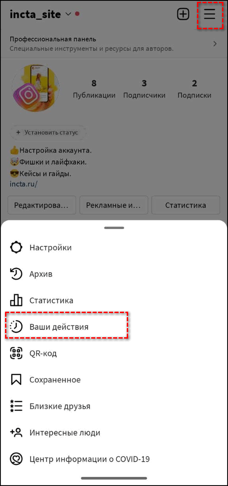
- Ваши действия – Скачать информацию.
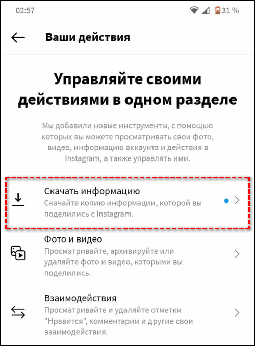
- Указать адрес электронной почты, которые подключен к профилю.
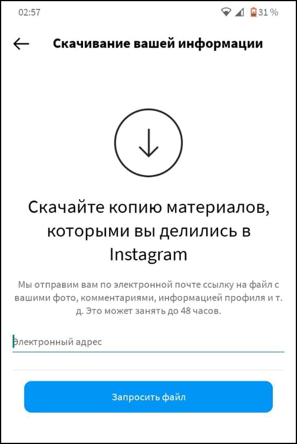
- Ввести пароль от страницы – подождать, пока Инстаграм* выгрузит данные и на почту придет ссылка на архив.
В письме будет ссылка от Instagram*, перейдя по которой пользователь получает архив. Есть два варианта: JSON или ZIP. Для распаковки второго необходимо установить на ПК или смартфон WinRar или 7ZIP.
Основные папки, которые нужны пользователю, чтобы сохранить все из Инстаграма*:
- media. Фото и видео, которые были сохранены в профиле;
- Переписки, файлы из сообщений;
- Комментарии из Инстаграма*.
Ссылка от Инстаграма* может попасть в папку спам, поэтому её нужно также проверить. В зависимости от объема данных, скорость сбора составляет от нескольких часов до пары суток. В основном, не более 72 часов со дня отправки запроса.
Проверить адрес электронной почты, который подключен к профилю:
- Зайти в Инстаграм* – Аккаунт.
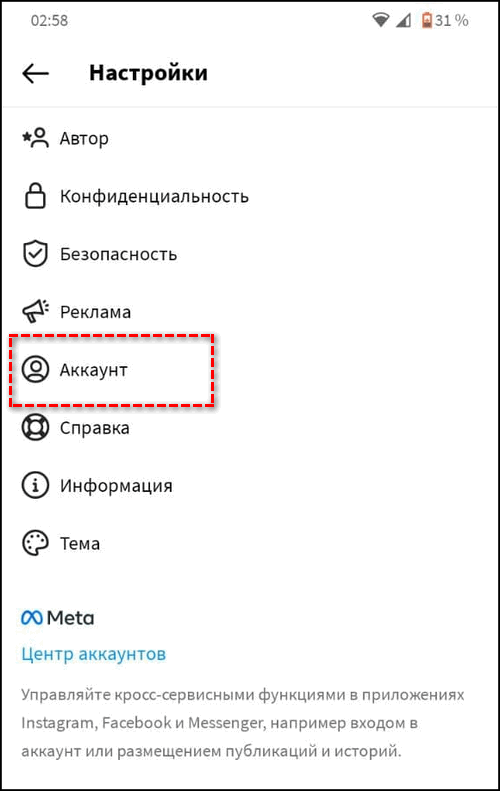
- Личная информация – первый пункт: «Адрес электронной почты».
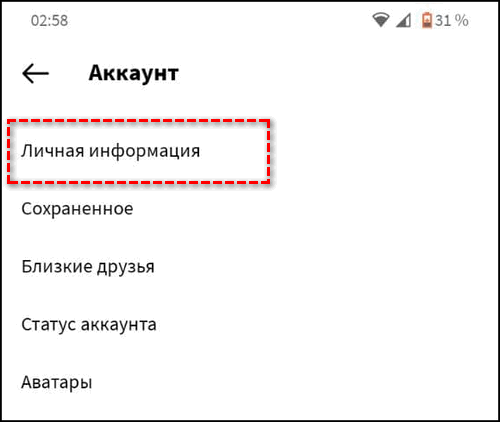
Именно его нужно указать при получение данных и на него придет ссылка с архивом. Если владелец страницы не помнит свой пароль, есть два варианта:
- воспользоваться формой «Забыли пароль»;
- посмотреть в сохраненных данных браузера, откуда заходили в веб-версию
Если владелец страницы хотя бы раз посещал аккаунт в Инстаграме* с веб-версии (компьютера/ноутбука) пароль может быть сохранен в аккаунт Google:
- Нажать в браузере сверху три точки – Настройки.
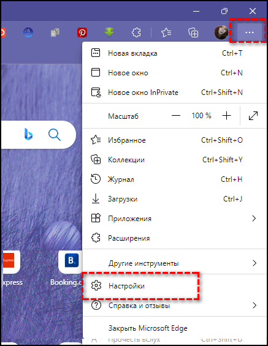
- В боковом меню: «Пароли» (или ввести в поиске функций).
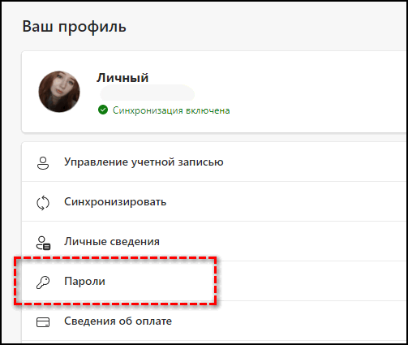
- В строке ввести название «Instagram*» - по никнейму найти пароль от своей страницы.
Эти данные нужно применить при получении архива данных из Инстаграма*.
Получить публикации из Инстаграма*
В полученном архиве пользователь увидит перечень папок, среди которых будет «content». В нем содержатся ссылки на публикации в формате HTML. Для фотографий и текстового описания подойдет такой формат загрузки. Как сохранить и выгрузить фотографии:
- Открыть полученную папку content – выбрать любой из файлов.
- Появится страница с копией фото и текстом – нажать по изображению правой кнопкой мыши: «Сохранить как».
- Указать формат PNG или JPG – сохранить на компьютер.
Для копирования текстового описания достаточно зажать левую кнопку мыши, выделить текст и перенести его в любой текстовый редактор.
В полученном архиве есть папка, где содержатся все медиафайлы – media.
В ней расположены файлы, дата их размещения и мета-данные:
- Открыть полученный архив – выбрать папку «media».
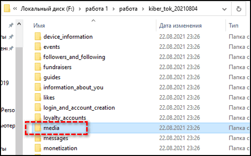
- Перейти по названию к любому типу контента.
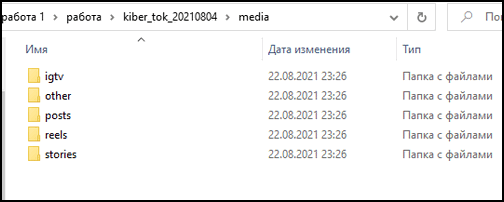
- Сохранить материал на смартфон или компьютер.
В этой папке содержатся Истории, публикации в фото и видеоформате, IGTV и Reels.
Есть второй вариант, как получить свои снимки и видео. В этом случае нужно устанавливать отдельное приложение на смартфон или воспользоваться расширениями для браузера.
- Savefrom.net. Расширение для Opera, Google Chrome, Mozilla и Microsoft Edge. Нужно установить в браузер и перейти в социальную сеть. Над каждым видео появится значок со стрелкой вниз, которое позволит загрузить клип на компьютер/ноутбук;
- Загрузчик видео для Instagram*. Мобильное приложение для Android;
- Insget. Для загрузки фото и видео из социальной сети.
Как воспользоваться insget для получения фото/видео:
- Зайти в Play Market – вписать название и установить приложение.
- Открыть – нажать снизу по значку человечка с лупой.
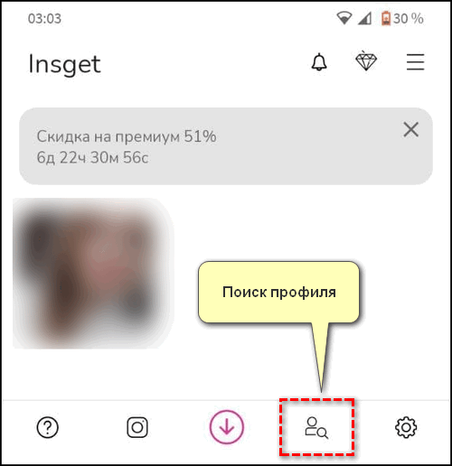
- Ввести название своего аккаунта – перейти к профилю.
- Выбрать посты, которые нужно скачать.
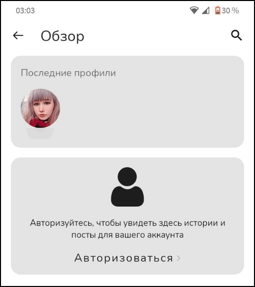
- Сверху в приложении три точки – активировать режим скачивания.
- Выбрать публикации – запустить загрузку на смартфон.
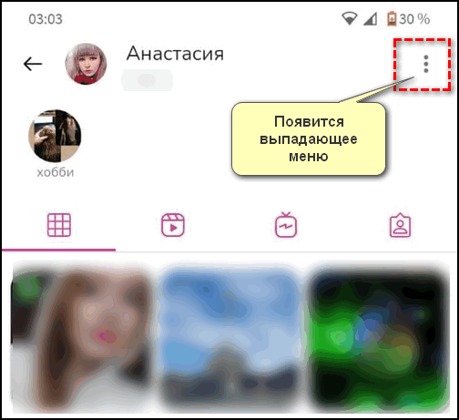
Приложение поддерживает загрузку материалов из Reels, IGTV и отмеченные фотографии. Особенность утилит по скачиванию фото и видео из Инстаграма* в том, что они могут подключиться только к общедоступным страницам. Поэтому владельцу профиля нужно предварительно сделать его открытым, перейдя к настройкам конфиденциальности.
Скачать свои Сторис
С Историями проще: их можно получить из раздела Архив, если фото давно были добавлены в профиль. Получить свои фото из Архива:
- Открыть профиль в Инстаграме* – три точки сверху.
- Архив – переключиться на вкладку: «Историй».
- Выбрать снимок – снизу три точки: «Сохранить фото».
Снимок будет отправлен в Фотопленку. Это касается фото и видео материалов, которые были размещены пользователем. Также, получив архив с данными, пользователь найдет копию своих снимков через папку «content» - stories. Если по каким-то причинам не получилось сохранить снимок из Архива, то можно сделать скриншот. На каждом смартфоне комбинация клавиш для создания снимков экрана разная. Обычно на смартфонах Android: зажать «качельку» громкости на уменьшение и клавишу блокировки одновременно. Будет создан скриншот, который автоматически сохраняется в Галерее.
Скачать данные из Архива
Помимо Архива Историй есть отдельный для публикаций. Туда входят записи, которые пользователь ранее архивировал и решил оставить не удаляя. Как загружать такие посты на телефон:
- Зайти в Архив – выбрать раздел «Публикаций».
- Выбрать запись – сверху три точки: «Показать в профиле».
Далее, установить то же приложение InsGet и получить записи на смартфон. В папке с информацией от Инстаграма* Архива нет, поэтому скачать данные получится либо через создание скриншота, либо с помощью дополнительной загрузки материалов и восстановления их в профиле.
Выгрузка Reels
Публикации Reels можно скачать из самого профиля, не прибегая к сторонним сервисам или приложениям. Или же воспользоваться папкой media, где файлы для этого раздела расположены в отдельной подпапке. Получить свое видео из Рилс:
- Открыть свой профиль – перейти к ранее размещенному клипу.
- Открыть запись в полном формате – нажать снизу три точки: «Сохранить в фотоплеку».
- Подождать окончания загрузки.
Или, второй вариант: воспользоваться Телеграм-ботом Instagram* Saver (@instasavegrambot):
- Перейти в Телеграм – запустить поиск по чатам.
- Ввести никнейм бота – открыть Инстаграм*.
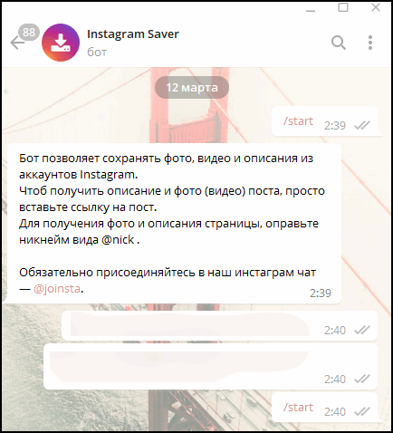
- Скопировать ссылку на свою публикацию.
- Вставить в строку отправки сообщений боту – получить видеоконтент.
Нужно добавлять по одной ссылке и только после получения материала добавлять следующую.
Как скачать сообщения
Чтобы получить свою переписку, пользователь может воспользоваться тремя вариантами:
- зайти с компьютерной версии и просто копировать каждое сообщение в текстовый редактор;
- функция «Снимок экрана». Сохранить наиболее важные моменты переписок;
- воспользоваться загрузкой архива на компьютер/ноутбук.
В последнем случае пользователь получит не только текст, но и отправленные фото/видео. Найти в папке с данными:
- Открыть полученный архив от Инстаграма*.
- Среди папок найти: «messages» - выбрать: «inbox».
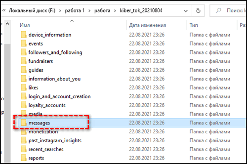
- Перейти в любую папку по названию аккаунта собеседника.
- Появятся фото и видео, которые были отправлены.
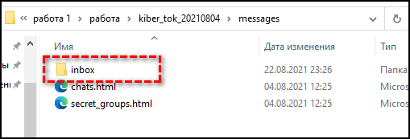
В файле chat хранятся ссылки на переписки, которые подписаны по названию аккаунта собеседника. Нажав по каждой, пользователь увидит сообщения одним списком и сможет их скопировать.